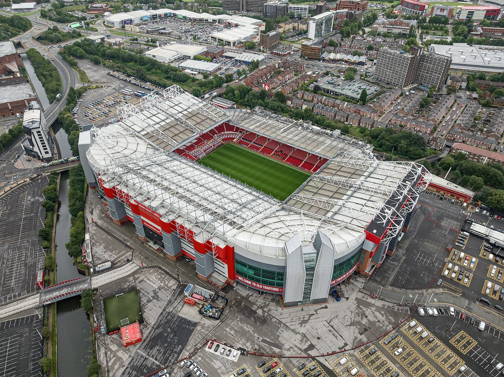
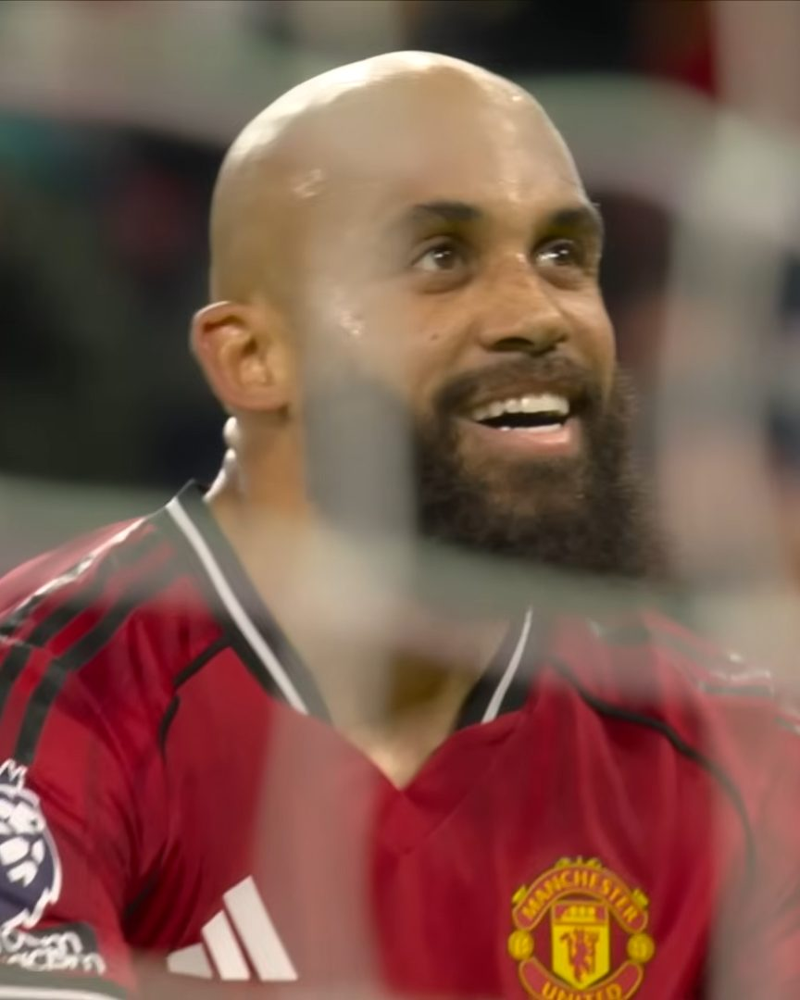
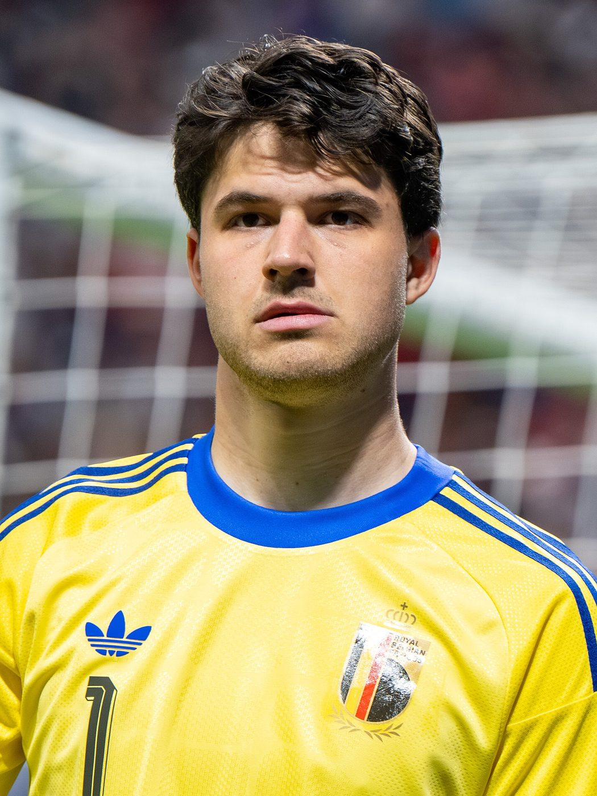
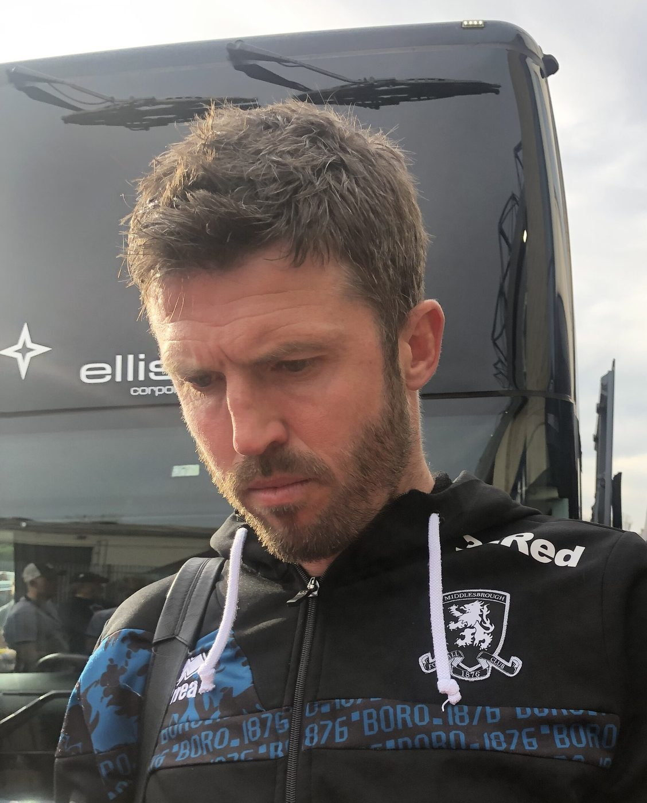

The one that got away
Bryan Mbeumo's left foot. A red card for Spurs. Fifteen minutes with an extra man. And still, somehow, Manchester United could not hold on.
Bentancur sent off


For seventy-two minutes, this was a slightly grumpy afternoon at Old Trafford. Neither side could find a way through, and United needed their goalkeeper, Senne Lammens, to make a string of saves, from Conor Gallagher, from Sávio and from Solanke. Then, in the 73rd minute, Matheus Cunha slipped the ball to Bryan Mbeumo, and the Cameroonian did something wonderful. He shifted the ball onto his left foot and hit a low, fizzing drive into the bottom corner. Old Trafford, which had been muttering, suddenly roared.
Five minutes later things got even better for United. Rodrigo Bentancur had only been on the pitch for twelve minutes when he flew into a two-footed challenge on Luke Shaw and then planted his head towards the England defender's face. Referee Stuart Atwell had no choice: straight red card. Spurs, who began the day in the relegation zone, were a goal down with ten men and a quarter of an hour to survive.
That should have been the end of the story. A team with a one-goal lead and an extra player is expected to win, and most of the time they do. But football has a cruel sense of humour. In the second minute of stoppage time, Sandro Tonali found Dominic Solanke, who got in front of Lisandro Martínez far too easily and steered the ball past Lammens into the far corner. One–one. A reprieve for Spurs, and an exasperating finish for everyone in red.
How the match turned: minute by minute
The goalMbeumo's moment


Mbeumo has already become one of the first names on United's team sheet, and goals like this explain why. The finish took real composure. He didn't snatch at it or try to blast the ball through the goalkeeper. He made a yard of space, chose the corner and kept the shot low, which is the hardest kind for a keeper to reach. It's worth remembering that he also scored both goals when United beat Atlético Madrid 2–1 in a pre-season friendly in August. Atlético, as it happens, are next.
Anatomy of a goal
The red cardBentancur loses his head
There was no great mystery about Bentancur's dismissal. First came a wild two-footed tackle on Shaw, then the head towards Shaw's face: a textbook example of an impetuous moment that a professional footballer cannot afford. Even Spurs' head coach, Roberto De Zerbi, said his player's reaction had been a mistake and was not the right way to behave. Bentancur, who had come on as a substitute in the 66th minute, now faces a ban.
Strangely, De Zerbi also argued that going down to ten men gave his team more energy and courage. It is the kind of thing managers say. Annoyingly for us, on this occasion it turned out to be true: former Spurs captain Jamie Redknapp pointed out on Sky Sports that Tottenham ran five kilometres more than United, ten men and all.
How United lined up

.jpg){kind=link}
The Touchline verdict
This was a game United should have won. They led, they had an extra player for the last fifteen minutes, and they were at home. Closing out a match, keeping the ball and calmly running down the clock, is a skill, and right now it's one United are still learning. The good news: Mbeumo and Cunha are combining beautifully, and on another day this finishes 1–0 and everybody goes home happy.
Our player of the match: Bryan Mbeumo, for the goal. Honourable mention to Senne Lammens, whose saves kept United in it long before that.
The big pictureWhere this leaves United

.jpg){kind=link}
The draw keeps United 12th in the Premier League with six points from six games, their fewest at this stage of a league season since 1986–87, when Sir Alex Ferguson's team had just four. It's also the second home game in a row in which they've failed to beat ten men: Manchester City's Phil Foden was sent off at Old Trafford last month, and City still won 1–0 with the help of a VAR decision the BBC says was wrong. Some supporters booed at the end of each half.
Carrick, whose own family have season tickets at Old Trafford, didn't hide from it. "Obviously, it hurts," he said. "It hurts a lot. I care as much as anybody about this place." United, he said, must become "a little bit more streetwise in moments, a little bit more stubborn and a little bit stronger in seeing out certain things." In other words: composure when it matters.
It's worth keeping some perspective. It's October, the gaps between teams are tiny, and only four points separate United from fourth place. United also have a 4–0 Champions League win already in the bag. The next fortnight is a big one: Atlético Madrid away on Tuesday, a trip to Leeds on Sunday 18 October, and then Como in the Champions League.
United's season so far
Football talk: stoppage time
The referee adds extra minutes at the end of each half to make up for time lost to injuries, substitutions, goal celebrations and VAR checks. It's called stoppage time (or "added time"), and it's written as 90+2′, which means the second minute after the ninety. The fourth official holds up a board to show the minimum amount of time being added. It is, as United discovered, plenty of time to concede a goal.
Three things we learnedWhat the match told us
- Mbeumo and Cunha are a proper partnership. The goal came from the two of them combining, and they look like they're thinking the same thoughts.
- Game management is the missing piece. Leading late with an extra man, United needed to keep the ball and calm everything down. Instead, Spurs got one more chance, and took it. Late goals have now cost United points three times this season, after Everton's stoppage-time equaliser and an own goal at Fulham.
- Spurs are in a scrap. They're 18th, but they showed real fight. It would be unwise to write them off, even if it's tempting.